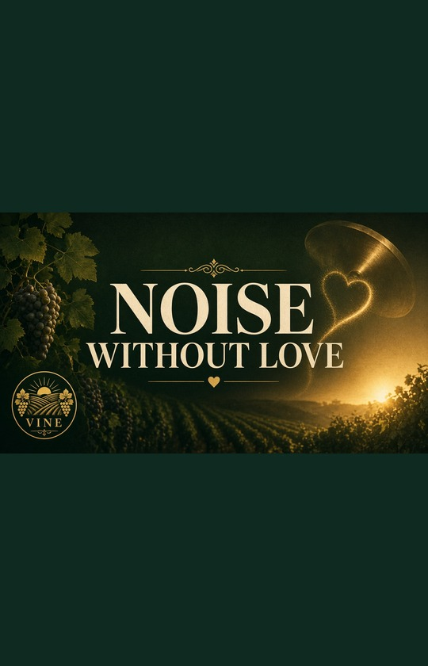
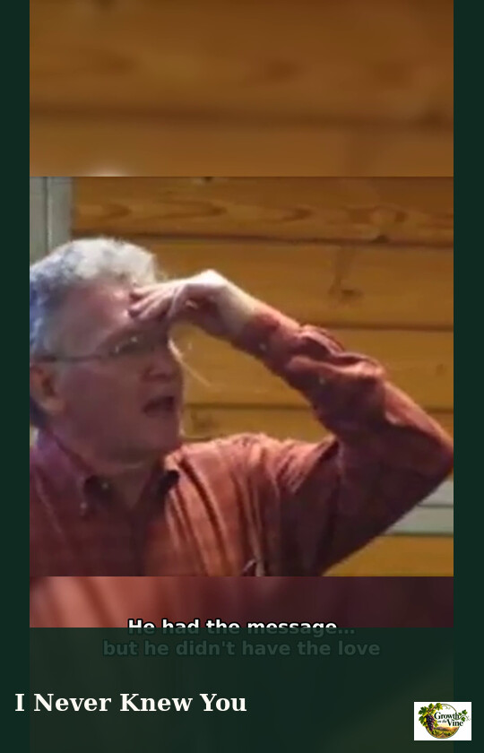
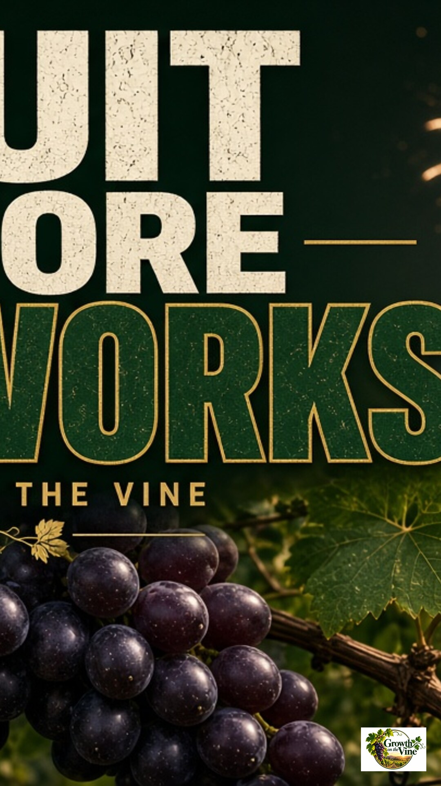

Clips · A More Excellent Way

~1 minNoise Without Love
If I speak with the tongues of men and of angels, but have not love — I’m just noise. A clanging cymbal.
Watch the clip →
~1 minI Never Knew You
You can prophesy, cast out demons, and do mighty works in Jesus’ name — and still hear Him say, “I never knew you.”
Watch the clip →Love Doesn't Demand Its Own Way
Love doesn’t say “my way or the highway.” It demands the right way — the truth — and keeps no record of wrongs.
Watch the clip →
~1 minFruit Before Fireworks
Love is the first fruit of the Spirit and the peak of divine character. Don’t chase manifestations without becoming like God.
Watch the clip →Perfect Means Mature
When Jesus says “be perfect,” He isn’t demanding a flawless life — He’s calling you into spiritual maturity and completeness.
Watch the clip →The Goal Is Love
The goal of the commandment is love out of a pure heart. Gifts and religious activity are means — not the destination.
Watch the clip →Looking for a verse or topic?
Search clips by keyword, Scripture, or theme — soft entry, Scripture clear.
About
Growth on the Vine shares living truth from Pastor David G. Kincer / Vine Cluster — remade as short, searchable clips. Soft entry at the door; Scripture clear in the content. Food for the soul. Wisdom for the soul.